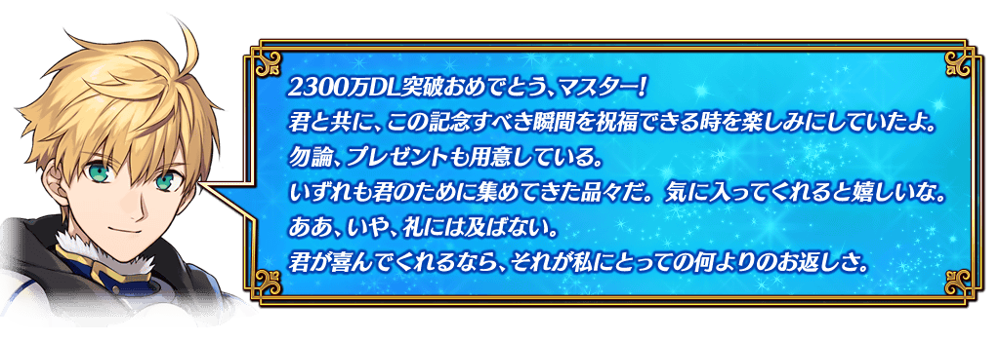
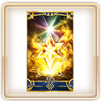
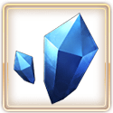
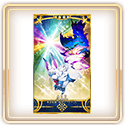
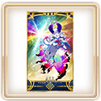
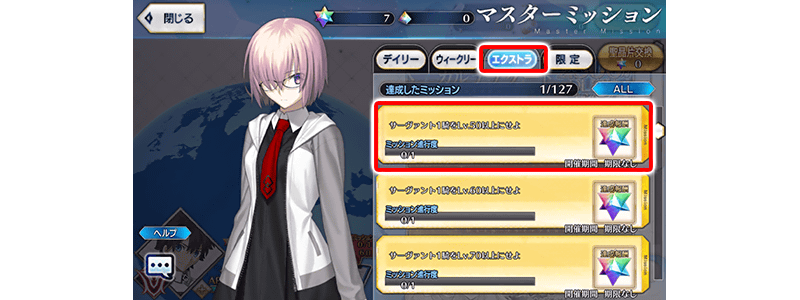
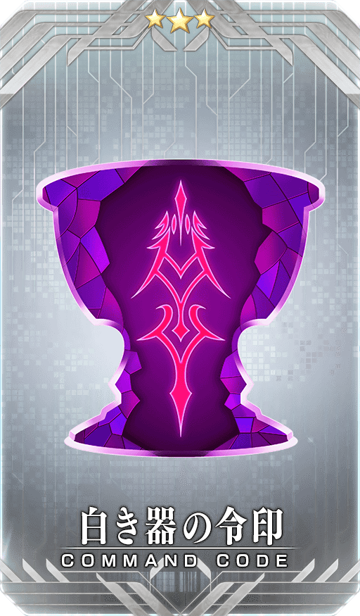
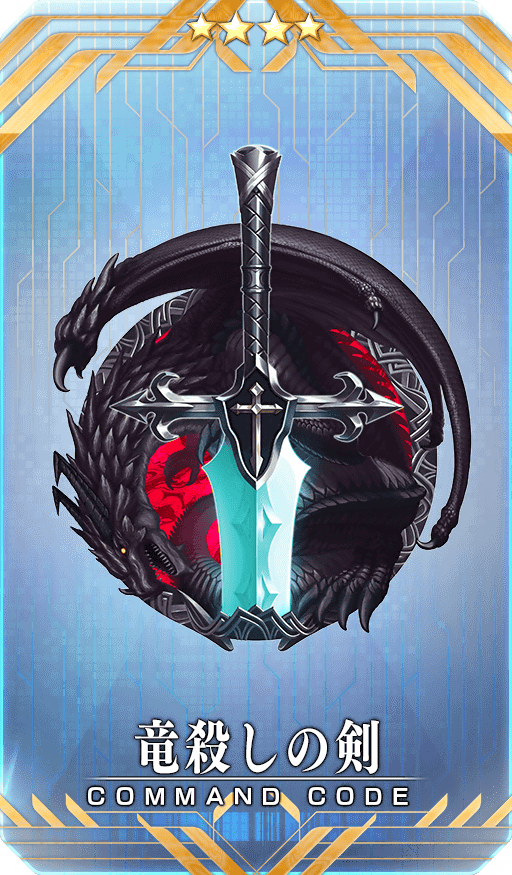
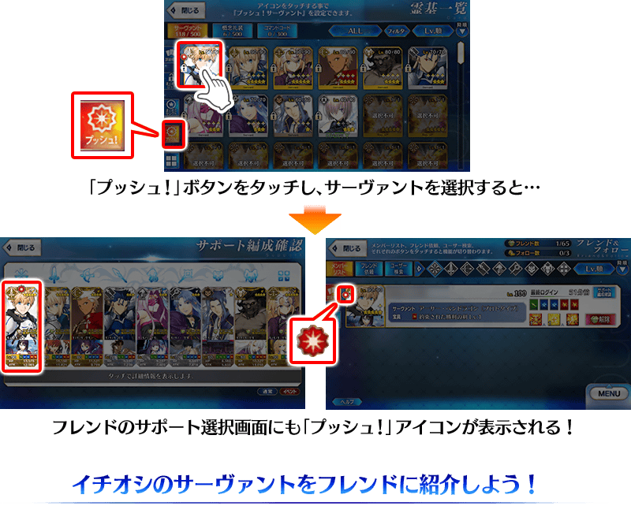
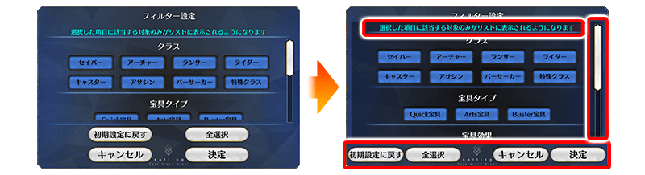

◆舉辦期間◆
2021年2月24日(三) 17:00～3月3日(三) 11:59
※本頁面皆為開發中圖片。會有與實際圖片相異的情況。
為了記念2300萬DL突破，實施特別的登入獎勵。
在下述期間中的話7天內連續登入的話，贈送白銀果實10個、黃金果實10個、睿智的猛火ALL★4(SR)10張、1,000萬QP、英靈結晶・星之芙芙ALL★3(HP)10張、英靈結晶・太陽之芙芙ALL★3(ATK)10張、呼符10張(聖晶石召喚最多11次份)的豪華報酬！
並且，在同期間中登入4次(1天算1次)的話，合送魔力稜鏡200個、英靈結晶・流星之芙芙ALL★4(HP)1張、英靈結晶・日輪之芙芙ALL★4(ATK)1張、稀有稜鏡1個！
◆舉辦期間◆
2021年2月25日(四) 3:00～3月4日(四) 2:59
◆贈送對象◆
2021年3月3日(三) 2:59前通過「特異點F 炎上汙染都市 冬木」的御主對象
※上述時間前，在管理室(ターミナル)畫面的關卡橫幅必須要有「CLEAR」的文字顯示。
【特別連續登入獎勵】
| 登入天數 | 贈送內容 | |
|---|---|---|
| 第1天 | 白銀果實 10個 | |
| 第2天 | 黃金果實 10個 | |
| 第3天 |  | 睿智的猛火ALL★4(SR) 10張 |
| 第4天 |  | 1,000萬QP |
| 第5天 |

|
英靈結晶・星之芙芙ALL★3(HP) 10張 |
| 第6天 |

|
英靈結晶・太陽之芙芙ALL★3(ATK) 10張 |
| 第7天 | 呼符 10張(聖晶石召喚最多11次份) | |
※登入獎勵會在每天3:00配發。 ※連續登入天數中斷後，無法領取之後的禮物。 ※(聖晶石召喚最多11次份)限在同一個聖晶石召喚進行的情況。 ※最多能領取7次，但根據成為贈送對象的時間點，可能無法到此上限。
【特別次數登入獎勵】
| 登入次數 | 贈送內容 | |
|---|---|---|
| 第1次 |

|
魔力稜鏡 200個 |
| 第2次 |  | 英靈結晶・流星之芙芙ALL★4(HP) 1張 |
| 第3次 |  | 英靈結晶・日輪之芙芙ALL★4(ATK) 1張 |
| 第4次 | 稀有稜鏡 1個 | |
※登入獎勵會在每天3:00配發。 ※合計4天內能領取，但根據成為贈送對象的時間點，可能無法到此上限。

在御主任務(Extra任務)，追加可透過強化從者到達的Lv.來達成的新任務。
達成所有任務的話，可得到最多30個(聖晶石召喚最多11次份)的聖晶石！
※就算已經達成本任務各條件的玩家，也能同様地領取通過報酬。 ※(聖晶石召喚最多11次份)限在同一個聖晶石召喚進行的情況。
◆翻新實施時間◆
2021年2月24日(三) 17:00～
◆通過報酬的領取方◆
在御主任務畫面顯示的「Extra(エクストラ)」的項目內，會顯示有關從者Lv.的任務顯示，請點擊已通過任務來領取達成報酬。

◆追加エクストラ任務◆
| 任務名稱 | 任務達成報酬 | |
|---|---|---|
| 1位從者到Lv.50以上 |

|
聖晶石 1個 |
| 1位從者到Lv.60以上 |
|
聖晶石 1個 |
| 1位從者到Lv.70以上 |
|
聖晶石 1個 |
| 1位從者到Lv.80以上 |
|
聖晶石 1個 |
| 1位從者到Lv.90以上 |
|
聖晶石 3個 |
| 1位從者到Lv.100以上 |
|
聖晶石 3個 |
| 2位從者到Lv.50以上 |
|
聖晶石 1個 |
| 2位從者到Lv.60以上 |
|
聖晶石 1個 |
| 2位從者到Lv.70以上 |
|
聖晶石 1個 |
| 2位從者到Lv.80以上 |
|
聖晶石 1個 |
| 2位從者到Lv.90以上 |
|
聖晶石 3個 |
| 2位從者到Lv.100以上 |
|
聖晶石 3個 |
| 3位從者到Lv.50以上 |
|
聖晶石 1個 |
| 3位從者到Lv.60以上 |
|
聖晶石 1個 |
| 3位從者到Lv.70以上 |
|
聖晶石 1個 |
| 3位從者到Lv.80以上 |
|
聖晶石 1個 |
| 3位從者到Lv.90以上 |
|
聖晶石 3個 |
| 3位從者到Lv.100以上 |
|
聖晶石 3個 |
※就算以前進行靈基變還(販賣)等而現在未持有滿足條件的從者，滿足條件的情況也會計算任務的進行度。 ※就算暫時加入狀態從者滿足條件的情況也會計算任務的進行度。 ※請注意同一個從者第2位的Lv.不會計算任務的進行度。
下述的期間中，在「御主任務」的「限定」標籤內以期間限定追加「【2300萬DL突破記念】任務」。
通過所有任務的話，可得到睿智的業火ALL★5(SSR)60張、獸之足跡1個！
◆舉辦期間◆
2021年2月24日(三) 17:00～3月3日(三) 11:59
◆領取期間◆
2021年2月24日(三) 17:00～3月10日(三) 11:59
◆追加任務◆
| 任務名稱 | 任務達成報酬 | |||
|---|---|---|---|---|
|
【2300萬DL突破記念】 擊倒任10名『Lancer』職階的敵人(從者及一部份Boss除外) |

|
睿智的業火ALL★5(SSR) 5張 | ||
|
【2300萬DL突破記念】 擊倒任20名『Lancer』職階的敵人(從者及一部份Boss除外) |
|
睿智的業火ALL★5(SSR) 5張 | ||
|
【2300萬DL突破記念】 擊倒3名持有『超巨大』特性的敵人 |
|
睿智的業火ALL★5(SSR) 5張 | ||
|
【2300萬DL突破記念】 擊倒5名持有『超巨大』特性的敵人 |
|
睿智的業火ALL★5(SSR) 5張 | ||
|
【2300萬DL突破記念】 擊倒3位持有『神性』特性的從者 |
|
睿智的業火ALL★5(SSR) 5張 | ||
|
【2300萬DL突破記念】 擊倒3位持有『混沌』屬性的從者 |
|
睿智的業火ALL★5(SSR) 5張 | ||
|
【2300萬DL突破記念】 擊倒3位持有『中庸』屬性的從者 |
|
睿智的業火ALL★5(SSR) 5張 | ||
|
【2300萬DL突破記念】 擊倒3位持有『善』屬性的從者 |
|
睿智的業火ALL★5(SSR) 5張 | ||
|
【2300萬DL突破記念】 編入1位以上『Saber』職階的從者，通過3次任意的關卡 |
|
睿智的業火ALL★5(SSR) 5張 | ||
|
【2300萬DL突破記念】 編入1位以上『Saber』職階的從者，通過5次任意的關卡 |
|
睿智的業火ALL★5(SSR) 5張 | ||
|
【2300萬DL突破記念】 通過所有的限定任務 |
|
睿智的業火ALL★5(SSR) 10張 | ||

|
獸之足跡 1個 | |||
※請注意舉辦期間與領取期間有所差異。 ※請注意與每週日23:00更新的普通任務(Weekly)不同欄位，超過領取期間的話無法入手報酬。 ※就算達成「【2300萬DL突破記念】任務」，也不會計算在普通任務(Weekly)的任務進行度。
下述的期間中，在強化從者及概念禮裝時所需的QP消耗量以期間限定變成1/4！
配合後述的大成功・極大成功發生率2倍，別錯過難得的此機會！
◆舉辦期間◆
2021年2月24日(三) 17:00～3月3日(三) 11:59
※請注意從者技能強化、靈基再臨(從者進化)、絆等級上限開放、指令紋章刻印、指令卡強化、從者寶具強化、聖杯轉臨、靈衣開放為對象外。
下述的期間中，在進行從者及概念禮裝的強化時，大成功(經驗值2倍加成)・極大成功(經驗值3倍加成)發生機率以期間限定變成2倍！
務必藉此機會強化中意的從者和概念禮裝吧！
◆舉辦期間◆
2021年2月24日(三) 17:00～3月3日(三) 11:59
舉辦期間中，所有從者強化關卡的消耗AP變成1/2！
(就算在戰鬥中撤退的情況，也會是同様的消耗量)
務必藉此機會通過尚未通過的從者強化關卡吧！
◆舉辦期間◆
2021年2月24日(三) 17:00～3月3日(三) 11:59

下述的期間中，在關卡開始時的支援選擇畫面，選擇其他御主的對象從者做支援情況、其他御主選擇自己的對象從者做支援情況，友情點數獲得量變成2倍。藉此機會入手更多友情點數吧！
◆舉辦期間◆
2021年2月24日(三) 17:00～3月3日(三) 11:59
※非好友的御主也是友情點數獲得量2倍的對象。 ※請注意NPC從者的情況為友情點數獲得量2倍的對象外。
為了記念「2300萬DL突破宣傳活動」舉辦，在達文西工房的「魔力稜鏡交換」永久追加下述的指令紋章。
就算已經持有「★3(R)白き器の令印」的情況也可於「魔力稜鏡交換」獲得指令紋章。
◆追加時間◆
2021年2月24日(三) 17:00～
|  |
★★★R |
◆追加道具(永久)◆
| 追加道具 | 能交換次數 | 1次交換所需的 魔力稜鏡數 |
|---|---|---|
| ★3(R)白き器の令印 | 1次 | 300個 |
※在「魔力稜鏡交換」追加的「★3(R)白き器の令印」為永久，沒有交換期限。
為了記念「2300萬DL突破宣傳活動」舉辦，在達文西工房的「稀有稜鏡交換」永久追加『魔力稜鏡交換「カルデア・ディナータイム」開放權』いたします。
『魔力稜鏡交換「カルデア・ディナータイム」開放權』為在「魔力稜鏡交換」開放「★5(SSR)カルデア・ディナータイム」的權利，關於實際交換1次需要魔力稜鏡1000個。
並且，本次也永久追加指令紋章「★4(SR)竜殺しの剣」。
就算已經持有「★4(SR)竜殺しの剣」的情況也可於「稀有稜鏡交換」獲得指令紋章。
◆追加時間◆
2021年2月24日(三) 17:00～
|
★★★★★SSR |
|  |
★★★★SR |
◆追加道具(永久)◆
| 追加道具 | 能交換次數 | 1次交換所需的 稀有稜鏡數 |
|---|---|---|
| 魔力稜鏡交換「カルデア・ディナータイム」開放權 | 1次 | 1個 |
| ★4(SR)竜殺しの剣 | 1次 | 2個 |
※在「稀有稜鏡交換」追加的『魔力稜鏡交換「カルデア・ディナータイム」開放權』與指令紋章「★4(SR)竜殺しの剣」為永久，沒有交換期限。 ※已經交換5張「★5(SSR)カルデア・ディナータイム」的玩家，無法交換『魔力稜鏡交換「カルデア・ディナータイム」開放權』。 ※已經交換1～4張「★5(SSR)カルデア・ディナータイム」的玩家，只會開放未交換份。不管能交換張數，所需的稀有稜鏡的交換數不會改變(已經交換4張的情況只會開放1張份)。
強化「★5(SSR)亞瑟・潘德拉剛〔Prototype〕」的特別關卡「從者強化關卡」，在迦勒底之門永久追加。
不僅進行對象從者的強化，也可獲得聖晶石做為關卡通過報酬。
※請注意在從者強化關卡沒有文字冒險部份。
◆追加時間◆
2021年2月24日(三) 17:00～
◆開放條件◆
持有的強化對象從者，必須使其最終再臨。
※未持有對象從者的話，不會出現關卡。
※關卡沒有舉辦期限。
在2021年2月24日(三)維修後反映的更新內容之中，介紹代表性的內容。
◆追加時間◆
2021年2月24日(三) 17:00～
追加可向好友顯示最推薦從者的功能
在好友和追隨追加可標示自己最推薦從者的『我推！從者』功能。
『我推！從者』能於從者詳細畫面和從者選擇畫面等設定。
※請注意暫時加入狀態的從者無法設定成『我推！從者』。

在篩選器設定中修改對話框
在從者選擇畫面等的篩選器設定中，調整說明文字的顯示區域和一部份按鍵的顯示位置，修改成讓可滾動的區域更廣。
另外，在各篩選器修改成會保留滾動條的位置。

其他還有，期間限定「2300萬DL記念Pick Up召喚」舉辦中！
關於詳情，請自下述橫幅確認。